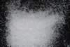

|
|
(For further information on spectroscopy, see:
http://speclab.cr.usgs.gov)
TITLE: Albite HS324 Plagioclase DESCRIPT
DOCUMENTATION_FORMAT: MINERAL
SAMPLE_ID: HS324
MINERAL_TYPE: Tectosilicate
MINERAL: Albite (Plagioclase, Na end member, Feldspar group)
FORMULA: NaAlSi3O8
FORMULA_HTML: NaAlSi3O8
COLLECTION_LOCALITY: South Dakota
ORIGINAL_DONOR: Hunt and Salisbury Collection
CURRENT_SAMPLE_LOCATION: USGS Denver Spectroscopy Laboratory
ULTIMATE_SAMPLE_LOCATION: USGS Denver Spectroscopy Laboratory
SAMPLE_DESCRIPTION:
"This is the sodium end member of the albite-anorthite series and is composed of 90 to 100% albite. Its spectrum shows weak features near 0.65 µ (very broad) and near 1.0 µ, suggesting the presence of small amounts of both Fe+3 and Fe+2. The Fe+3 substitutes for aluminum, and the Fe+2 substitutes for the calcium, the latter in whatever anorthite is present. Hydroxyl and water bands are seen near 1.4 and 1.9 µ, and the AlOH bend OH combination feature near 2.2 µ is evident. The strength of this last band suggests incipient alteration of the sample, which is not apparent in hand specimen."
Hunt, G.R., J.W. Salisbury, and C.J. Lenhoff, 1973, Visible and near-infrared spectra of minerals and rocks: VI. Additional silicates. Modern Geology, vol. 4, pp 85-106.
White color, 74-250µm sieve interval.
Note: the spectrum of this sample shows a significant 2.2-µm band apparently due to alteration although (see microscopic examination below) it can not be seen by visual examination. Roger N. Clark
IMAGE_OF_SAMPLE:

END_SAMPLE_DESCRIPTION.
XRD_ANALYSIS:
Albite + 3.18(s) anorthite?? (Norma Vergo)
END_XRD_ANALYSIS.
COMPOSITIONAL_ANALYSIS_TYPE: None # XRF, EM(WDS), ICP(Trace), WChem
COMPOSITION_TRACE: None
COMPOSITION_DISCUSSION:
No compositional analyses available
END_COMPOSITION_DISCUSSION.
MICROSCOPIC_EXAMINATION:
avg. grain size = 265µm
Pure sample no visible alteration or contamination, clear cleavage bounded crystals. G. Swayze
END_MICROSCOPIC_EXAMINATION.
SPECTROSCOPIC_DISCUSSION:
END_SPECTROSCOPIC_DISCUSSION.
SPECTRAL_PURITY: 1c2c3b4b # 1= 0.2-3, 2= 1.5-6, 3= 6-25, 4= 20-150 microns
| LIB_SPECTRA_HED: | where | Wave Range | Av_Rs_Pwr | Comment |
|---|---|---|---|---|
| LIB_SPECTRA: | splib04a r 106 | 0.2-3.0µm | 200 | g.s.= 265 µm |
| LIB_SPECTRA: | splib05a r 156 | 0.2-3.0µm | 200 | g.s.= |
| LIB_SPECTRA: | splib06a r 402 | g.s.= | ||
| LIB_SPECTRA: | splib06a r 414 | g.s.= |
{kind=link}